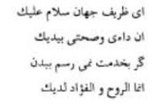

Mevlânâ hazretleri, Şems’in gidişine çok üzüldü. Sultan Veled, babasının, Şems’in gidişine sebep olanların yüzlerine bile bakmadığını yazıyor. Sebep olanların yaptıklarına pişman olduklarını, Mevlânâ’nın da onları affettiğini bildiriyor. Bir müddet sonra Şems, Mevlânâ’ya Şam’dan bir mektup göndermiş, bu suretle Şems’in Şam’a gittiği anlaşılmıştır.
Şems, Şam’dan mektup yazınca Mevlânâ da ona mektuplar yazdı. O zamanlar, şimdiki gibi posta teşkilatı olmadığından mektuplar ulaklarla gönderiliyor, bu da hayli zaman alıyordu. Eflaki hazretlerinin Menâkibü’l-Ârifîn adlı eserinde, Mevlânâ’nın Şems’e yazdığı dört manzum mektubu bulunmaktadır. Bu manzum mektuplardan teberrüken bir iki beyit aldım:

“Ey dünyanın zarif kişisi, sana selâmlar gönderirim. Şunu iyi bil ki benim hastalığım da sağlığım da senin elindedir. Bedenimle senin yanında değilsem de sana hizmet edemiyorsam da şu bir gerçektir ki, ruhum ve gönlüm senin yanındadır.”
Mevlânâ, Şems’in yerini öğrenince Sultan Veled’i çağırdı. Ona bir miktar para vererek, “Sen, elçi olarak git, bu paraları ayağına saç, benim tarafımdan rica et, kendisine kötü davrananların pişman olduklarını söyle, lütfetsin, gelsin.” dedi.
Eflaki, Sultan Veled’in Şam’a yirmi kişi ile gittiğini yazıyor. Şam’da Şems hazretlerini buldular. Sultan Veled babasının dediğini yaptı; paraları ayağına saçtı. Şems paraları görünce gülümsedi, “Muhammed huylu Mevlânâ bizi altınla, gümüşle ne diye oyalıyor, onun dileği kâfi...” dedi ve Konya’ya gelmeyi kabul etti. Yolda, herkes at üstünde giderken Mevlânâ’nın oğlu Sultan Veled yaya olarak yürümede idi. Şems, ona, “Sen de ata bin, şu yörük kır ata binerek yol al.” dedi ise de Sultan Veled, “Ey, pâdişahlar pâdişahı! Seninle eşit olmaya gücüm yetmez. Hem pâdişah ata binsin hem de kul, bu nasıl olur?” dedi.
Şam kervanı Konya’ya yaklaşınca Sultan Veled babasına bir müjdeci gönderdi. Mevlânâ müjdeyi alır almaz, dervişler, beyler ve Mevlânâ’nın adamları, Mevlânâ ile beraber karşı çıktılar. 8 Mayıs 1247 günü Şems hazretleri tekrar Konya’yı şereflendirdi. Şems Mevlânâ’yı görünce atından indi. Kucaklaştılar; iki mânâ denizi tekrar birleşti.